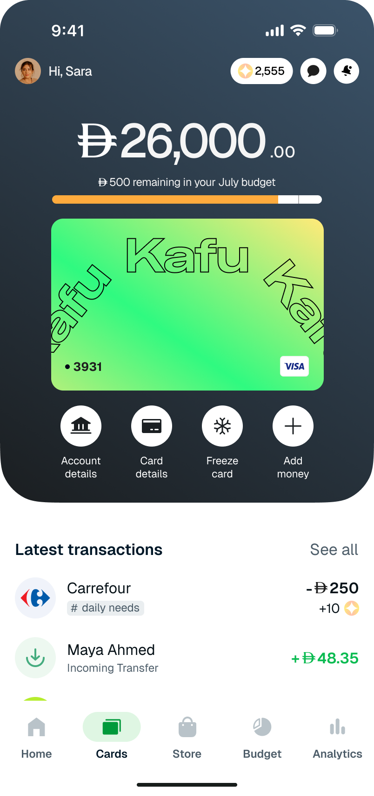

A self-initiated exploration of how a fintech mobile app might surface monthly budgeting in a way that helps users before they overshoot — not after.
ROLE
Product Designer
TYPE
Self-initiated exploration
TIMELINE
2025
DOMAIN
Fintech / Mobile
Overview
Mobile banking apps are good at showing what was already spent. They are noticeably less good at showing how much is still left, while there's still time to act on it. This exploration set out to flip that — to put a clear, persistent answer to "how much can I still spend?" at the front of the experience, where it can actually change behaviour.
The output is a budgeting feature for a hypothetical UAE fintech, "Kafu", that tracks monthly spend, flags categories that are bleeding the wallet, and sends a gentle heads-up before a limit is breached.
The Premise
Young salaried users in the UAE quietly run out of money before payday. Coffee runs, taxis, food delivery, and forgotten subscriptions add up faster than they realise. The bank app shows totals — but only after the damage is done. The frame for this exploration was simple: design a feature that gives people awareness in real time, without nagging them.
Two signals would tell us this is working:
→
Stay-under-budget rate
The percentage of monthly users who finish the cycle within the limit they set themselves.
→
Budget check frequency
How often users open the budget surface — a proxy for whether the feature is trusted enough to be referenced.
Research & Discovery
I gathered representative quotes from young salaried professionals and clustered them into an affinity map. A few of the recurring lines:
"I grab coffee on the way to work almost every day without thinking."
"I wish I had a quick glance at remaining budget."
"A heads-up at 80% is useful; anything earlier and I ignore it."
Four themes emerged. Each one mapped cleanly to a design implication.
01
Blind spending triggers
Coffee, taxis, and small contactless payments happen on autopilot. A "log now" shortcut in notifications would defeat the auto-categorisation that makes the app worth using — solve the visibility problem with categorisation, not data entry.
02
No real-time awareness
People only check balances when something prompts them. Surface budget state passively — a persistent widget on the homepage, or a dedicated tab — so it's seen without being sought.
03
Category confusion
"Did I log Uber as Taxi or Travel?" Smart auto-categorisation reduces decision fatigue; the ability to adjust after-the-fact preserves user agency.
04
Alert preferences and timing
Notifications need to be useful, not noisy. Customisable thresholds (80%, 90%, 100%) plus snooze respect how each person wants to be warned.
Customer Journey Map
A simplified CJM mapping a typical monthly cycle: sentiment trends down from Payday into Late month, with friction points and intervention opportunities at each stage.
Sentiment
Positive
Neutral
Negative
Stage
Payday
Day 1
Early month
Days 2–10
Mid month
Days 11–20
Late month
Days 21–end
Touchpoint
Push notification
Salary credit alert.
Contactless taps
Daily card spend across dozens of small payments.
App session
Opens the app to send money.
Low-balance push
Reactive overdraft alert.
Insight
Balance is mentally discounted
The new balance is allocated within hours but spent over weeks.
Small spends don't feel real
No running total surfaces during taps, so the impact is invisible.
"Am I over budget?" goes unanswered
Status requires manual investigation across screens.
The alert arrives too late
The damage is already done by the time the warning fires.
Opportunity
Intervention 01
"Set this month's budget" prompt
Capture intent while attention is highest.
Intervention 02
Auto-categorisation + weekly digest
Make invisible spending visible.
Intervention 03
Persistent budget widget
Always-on visibility without extra friction.
Intervention 04
Proactive 80% / 100% alerts
Warn before the category cap is breached.
User Stories
The clusters and the journey map gave me five user stories that defined the MVP scope.
1
Persistent budget widget
"As a user, I want to see remaining funds at a glance — without opening a separate screen — so I never lose track of where I am in the month."
2
Auto-categorisation
"As a user, I want category suggestions when I log an expense, so I spend less time sorting and more time deciding."
3
Custom alert thresholds
"As a user, I want to choose when I get notified — 80%, 90%, 100% — so the alerts feel useful instead of nagging."
4
Monthly budget prompt
"As a user, I want a quick way to set my budget at the start of each month, so I don't have to remember to do it."
5
Top-spending highlights
"As a user, I want to see my biggest outflows at a glance, so I know where to cut without combing through every transaction."
Competitive Analysis
I looked closely at how N26 and Revolut handle budgeting on iOS. Both are well-regarded competitors with overlapping audiences.
N26
Surfaces average spend over the last 3 months, a smart anchor when setting a budget
One overall monthly limit; minimal setup friction
Budgeting lives inside the analytics section
Revolut
Category-level budgeting; useful granularity for power users
More configuration up front; rewards careful setup
Budgeting also nested under analytics
The most interesting finding wasn't a feature. It was a placement question. Both apps tuck budgeting inside Analytics, but those are different mental modes. Analytics is retrospective: what did I spend? Budgeting is proactive: what can I still spend? If budgeting is a daily-use feature, it earns its own seat at the tab bar, not a sub-page two taps away.
Design Process & Solution
The MVP came down to four product decisions, each tied directly to a research cluster.
→
Persistent budget widget on the homepage
"Used / Total" with a progress bar, visible the moment the app opens. No tap required.
→
Smart auto-categorisation
The app suggests a category from the merchant and amount; the user confirms or overrides.
→
Customisable alert thresholds
80% / 90% / 100% — pick any combination. Snooze for an hour, a day, or until the next paycheck.
→
Monthly budget prompt
On the 1st of every month (or whenever the salary lands), a single-screen prompt asks "set this month's budget" with smart defaults.
Homepage with persistent budget widget

The full budgeting flow walks the user from setting a monthly amount, through reminder preferences and category allocation, into the live overview that tracks the month.
01Plan your spending
02Enter the amount
03Pick a reminder
04Allocate categories
05Set a category budget
06Confirmed allocation
07Track the cycle
Iteration & Feedback
Internal feedback and informal testing surfaced two opportunities for the second pass.
→
Suggested budget pre-fill
People asked: "Can the app just suggest a budget based on what I usually spend?" I added a "Use suggested — AED 3,800" option to the monthly prompt, anchored on the previous three months. The user can still override; the suggestion just removes the cold-start.
→
Arabic / RTL adaptation
Half of the UAE audience reads Arabic. I prototyped the budget screens in RTL to validate that the widget, progress bar, and category list survived the mirror without losing readability. (The Arabic mockups will read better once a typeface is locked in.)
Iteration 2 — suggested budget prompt
Image placeholder
Arabic / RTL exploration
Image placeholder
Key Takeaways
1
Placement is a feature
Whether budgeting lives inside Analytics or in its own tab is itself a design decision — and the right answer depends on how often the user touches it. Daily-use features earn first-class real estate.
2
Smart defaults beat blank forms
"Use suggested AED 3,800" was a tiny addition that removed the biggest friction in the flow. Cold-starts are where users churn.
3
Alert design is taste, not science
There's no universally correct threshold — only "right for me." Letting users pick converts a friction into a perceived feature.
4
Localisation surfaces design debt early
Designing the Arabic / RTL version forced spacing, alignment, and iconography decisions I'd have hand-waved in English. RTL is not an afterthought; it's a litmus test.